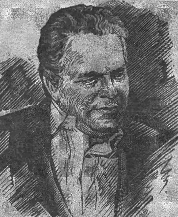

Сиротюк Микола Йосипович був народжений 9 липня 1915 року в с. Теклівка, що на Вінниччині, де й провів все дитинство. За фахом М. Сиротюк історик, навчався в Одеському університеті. Вже після навчання, від самого початку Другої світової війни, юнак іде на фронт, де захищає Батьківщину до останнього дня протистояння. Після повернення присвячує своє життя вчителюванню, деякий час викладає у столичних університетах, займається дослідницькою діяльністю, за що згодом отримує звання наукове звання "професора".
Літературний доробок М. Сиротюка засновується переважно на творах, присвячених історичній тематиці. Проте, суттєвий відбиток на зображення фактів в романах і повістях автора, покладений радянською цензурою, в умовах якої він працював. Українському читачеві письменник відомий за такими оповіданнями, як "Іван Микитенко", "Живий перегук епох і народів", "Зінаїда Тулуб", "Забіліли сніги" тощо.
Серце видатного літератора зупинилося 10 жовтня 1984 року.